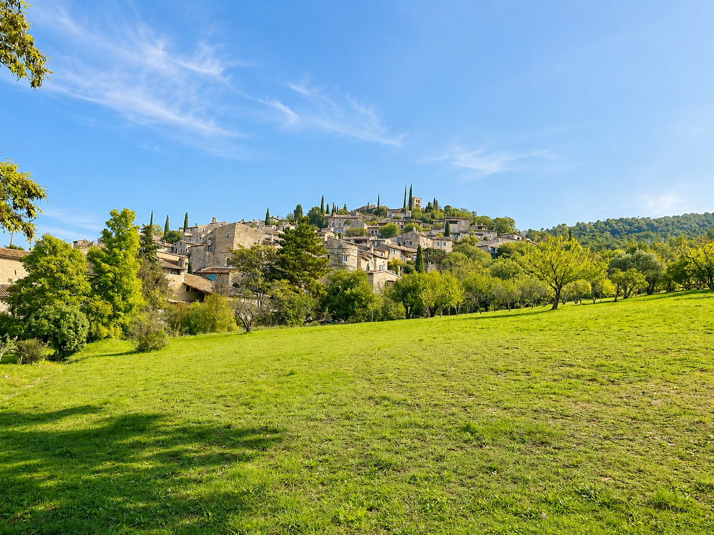

About 50 minutes from Les Cabritas, Mirmande is one of the Most Beautiful Villages of France, perched above the Rhône valley. Its stone lanes and sweeping views make it a place apart for an afternoon of leisurely strolling.

An artists' village perched above the Rhône
Mirmande's charm lies in its narrow lanes, stone houses and old doorways that tell centuries of history. Set atop a hill, the village opens onto one of the finest panoramas of the Rhône valley, and has long drawn painters, captivated by its light and unspoiled atmosphere.
An artistic reputation since the 1920s
From the 1920s onwards, cubist painter André Lhote settled in Mirmande and founded a painting academy there that attracted numerous artists, helping to save the village from gradual abandonment. Even today, Mirmande retains this open-air studio atmosphere, among galleries and carefully restored artists' houses.
Good to know before you visit
Bring sturdy shoes for the village's steep streets, which are car-free at its heart. Mirmande can be visited in a short half-day, easily paired with Montélimar or the Drôme provençale for a full day out in the area.
Practical info from Les Cabritas
- Distance from Flaviac: about 50 min by car
- Best time to go: spring to autumn
- Great for: charming villages, walking, photography
Fancy discovering Mirmande from your cottage in Ardèche?
Les Cabritas welcomes you in Flaviac, at the heart of Ardèche, for a comfortable stay with a private pool, just a stone's throw from the region's most beautiful sites.
Check availability